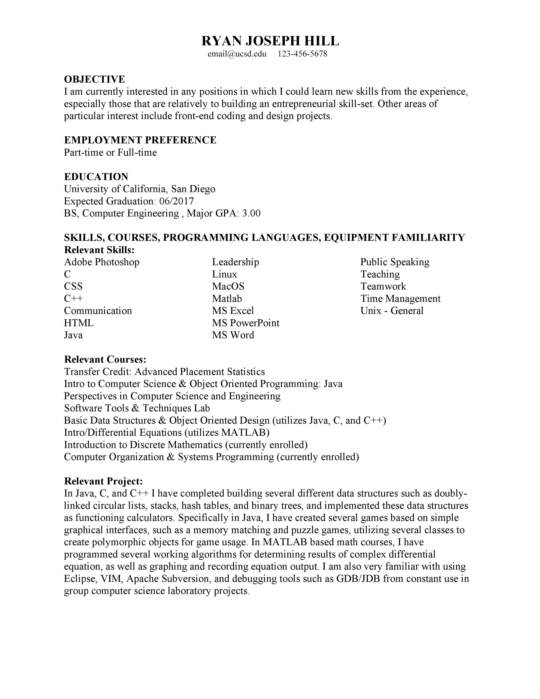
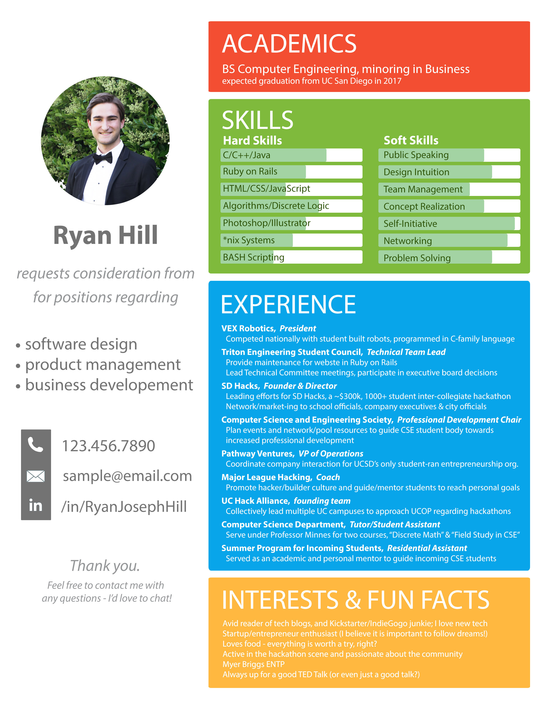
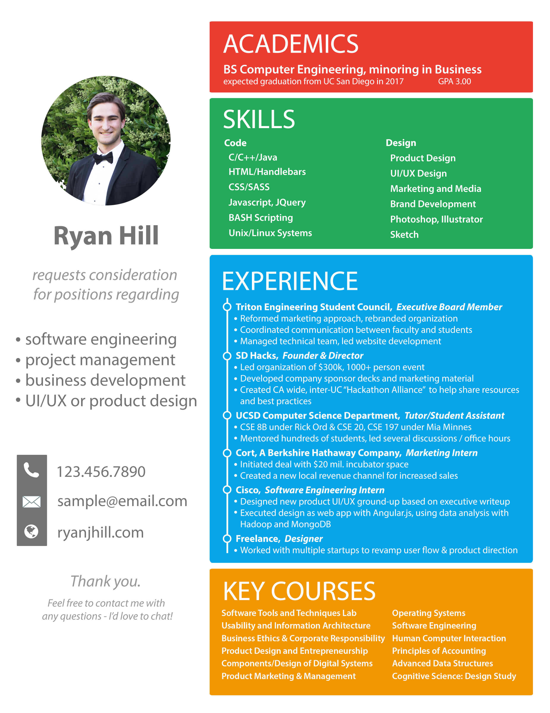

Using iterative design processes, I've spent years improving how I present my resume. Although I once felt resumes were born to be plain and only meant to explain content, I now see it as a form of expression. This is an exercise in branding and advertisement, where I can try experimentating with information architecture and visual design.
My earliest resumes were very simple, and were made on Microsoft Word without much thought put into anything but the content. As I became more involved in studying human-computer interaction, I discovered an appreciation for good presentation, and realized it could make all of the difference in expressing myself through my resume.
Although this is skill an on-going process, enjoy the progression of my resume format over time as I received feedback from dozens of recruiters across multiple industries.
Like most people who are in their early career development years, I didn't really know what I was doing with my resume. I googled some online examples and took suggestions for content from my university's website.
Okay, this is almost embarassing... but it definitely happened! I even said I wanted a design position on my resume. Sigh.
Let's go over a few of the problems with this resume (and really all resumes of this type.)
First of all, they are bland. Painfully bland. I've heard many people say that recruiters spend only 7 seconds looking at resumes. Retrospectively, having been responsible for making hires based on looking through resume pools, I can agree with this sentiment. I wouldn't pick my resume out of a pile for sure.
This also feeds into a second major problem; the resume isn't very functional. Information is hard to extract. Nothing on the page catches the eye. It's not easy to read. Text blocks are dense and they feel painful to even approach.
The paper representation of Ryan Hill you see before making a hiring decision felt like something even Ryan Hill cringed at the thought of reading.
My personal advertisement shouldn't be as stale as nutrition facts.
I actually went through a few variations similar to this, but other than wording and content, nothing really changed.
After talking to recruiters in many different contexts, such as through my own job searches, being a career fair organizer, planning hackathons, and making my own hiring decisions, I found a lot of major pain points with my original resume, and resumes similar to it.
I decided that I would make an attempt to tackle all of these problems with my resume redesign.
Making the mental connection between the candidate and their paper is hard. This is something I emphathize with a lot. I always am forgetting names and context for people that I meet, but I rarely forget faces or interesting interactions. I needed my resume to work around that human tendency, so I made two major decisions. First of all, my resume needed a picture. Faces are easier to remember, and I think I tend to make a better in-person impression anyway. It only made sense that they should be able to recall my face when they look at my resume. Secondly, it needed to be unique enough that it stood out, so you'd remember looking at the paper before too.
Lack of personality; for a personal ad it has little substance. I decided that I needed to add color to my resume, because it was a way to be expressive. I wanted my resume to give off a bit of character, with a dash of playfulness. After all, that's who I am, and it only made sense that I make that clear from the getgo. I also felt that adding some fun facts and hobbies might help present a little more 'me.'
Distinguishing between sections is a large cognitive load; where should I be looking? Content headers needed to be bigger. Sections needed to have stronger walls (whether those be by visible borders or invisible whitespace is up to preference, in my opinion.) Each section should be so notably different from the others that I have no trouble navigating the page with my eyes, even when I'm in a rush.
Dense paragraphs feel like they will take too long to read, so they don't get read. People just don't read anymore. Perhaps a sad realization in many ways, but human-centered design works with the humans, not the other way around. Since we can't get people to read, let this be the death of paragraphs and the rebirth of the bullet point. Sweet, straight-to-the-point, content. Hell, even sentence fragments. As long as it gets the point across, it probably is better than an obese paragraph.
Although as of lately I've been too busy to bring a major overhaul to my resume, there were a few simple usability issues I saw over time that I felt were worth the work-to-result cost to implement. Seemingly small at first, make of the complaints I once received are no longer a problem, so the design seems to be moving in the right direction!
Colors got deeper. Although aesthetically I prefer the slightly lighter palette, providing a better background for increased visibility is definitely a priority. What use is a resume if you can't read the words?
Fun facts gave character, but course info gave content. I had enough self-expression on my resume through other means. 'Key Courses' provided validity many recruiters were told to look for, which helped with early filtering.
Experiences have a timeline to latch onto. This change was a push to bring more definition to the structure of the experience section, making it easier to scan for important headers.
What does 20% of a skill even mean? Many people really liked the progress bars, but many were confused. I quickly fixed this with sample progress bar next to the header, with the sample bar having lines to gauge level, much like the lines on a thermostat. It did the job, but was messy, and isn't shown on this update. Instead, I just got rid of the bars altogether and replaced them with sub-headers that helped categorize my skills a bit more. I'm glad I tried the progress bars though - it was a good experiment. I'm not sure I would recommend it to others though. Even if well presented, saying you are an 'expert' or a 'beginner' in something is just too subjective. If clarification is needed, talk about it in the interview where you have the liberty to give enough words to avoid miscommunication.
Slight content updates. More clarity on terms, new experience, updated website link, and a few other things. Language changed in places some users found either confusing or unnecessary.
I made this portfolio. That's right, the one you are reading right now. I think it's a fantastic complement to the static paper. I'll report back at some point if that's holds true in the job market.
Even with the designs above standing in as my 'current' resume, I feel like I've largely outgrown it. When I personally am starting to feel a few significant pain points with its current form, I know it's time to cook up something new.
Some of the things that I would like to fix in the big redesign:
Ultimately, my resume should be able to exist in both web and print forms. It should be an extension of good web design, where the structure remains but responds differently to being on print. It should be cleaner and clearer, with more intuitive headers and categories that help you understand what kind of sub-content you are about to delve into. You should be able to find things in the order that you want - skill/buzzword first, then with justification. Right now I rely too much on the reader making sense of the content, whereas the content should clearly relate back to a more understandable and universal statement.
Even as I look at other's resumes, I often find myself wondering... What do these facts really mean? Accomplished X, you say? Well I don't know what X is, so explain to me how that is an accomplishment. Looking bad at my resume though, I feel like this is still an issue. A good start to this fix would be giving the content a different structure and a few more details. Combined with information hiearchy changes as listed in the last paragraph, I feel like a resume could be more informative in less time.
Updating my resume is of course an ongoing process that never really is complete. Over time I will be updating both my resume and this page to attempt to reflect the current me, although since "building my resume" through new experiences is more important to me than literally building the resume, this process probably won't be a fast one.
The process of getting user feedback on my resume was so valuable, I tried to replicate this for other UCSD students by creating a Facebook group to do just that. From the experience of updating my own resume, and looking through thousands of resume across my experiences in edtech startups, hackathons, and career fairs, I often give advice to posters in the groups, but usually other members often community direction to help each other improve.
If you have any questions about my resume, or want some help with yours, feel free to reach out to me!